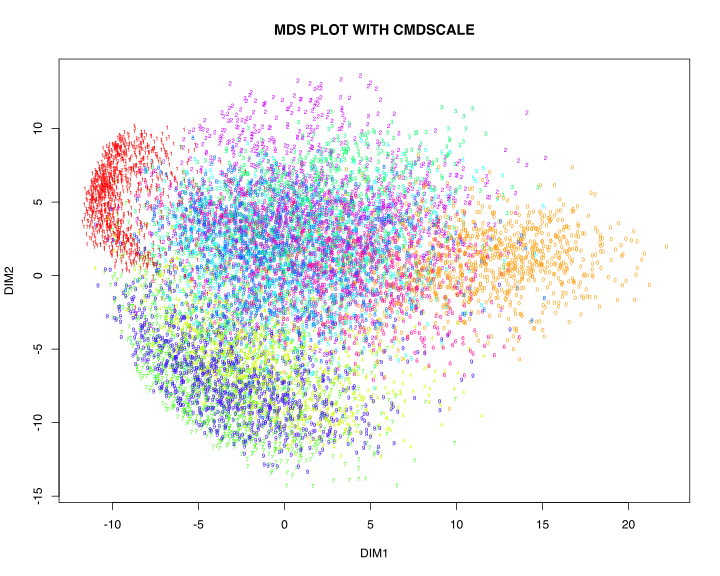
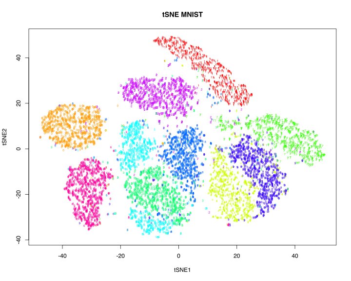
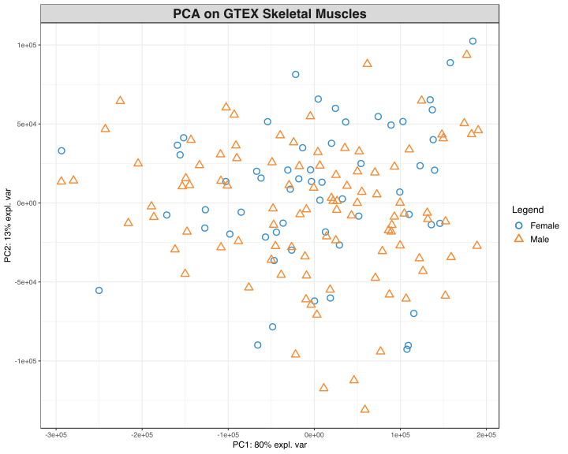

Mathematical Statistics in R
RaukR 2019 • Advanced R for Bioinformatics
Nikolay Oskolkov

In this tutorial, we cover basic concepts of Linear Modelling in R, and compare Frequentist and Bayesian approaches. We start with a basic Ordinary Least Squeres Linear Regression model and show how it can be improved by accounting for non-independent observations within Linear Mixed Models (LMM) formalism. Later, we extend Frequentist LMM for Bayesian Multilevel Models and emphasize the difference between the two approaches.
Further, we will cover basic concepts of univariate and mutlivariate feature selection using LASSO, Ridge, Elastic Net and Partial Least Squares (PLS) regression models.
Finally, we talk about the Curse of Dimensionality and ideas behind dimensionality reduction. We are going to cover a) linear dimensionality reduction techniques (PCA, metric MDS), and b) non-linear dimensionality reduction techniques (tSNE)
1 Ordinary Least Squares Linear Regression
As a test data set we will use a sleep deprevation study data set [1], where sleeping time of all individuals was restricted and reaction of their organism on a series of tests every day was meeasured during 10 days. Let us have a look at the data set, it seems to include 3 variables: 1) Reaction, 2) Days, 3) Subject, i.e. the same individual was followed during 10 days.
library("lme4")
head(sleepstudy,20)
str(sleepstudy)## 'data.frame': 180 obs. of 3 variables:
## $ Reaction: num 250 259 251 321 357 ...
## $ Days : num 0 1 2 3 4 5 6 7 8 9 ...
## $ Subject : Factor w/ 18 levels "308","309","310",..: 1 1 1 1 1 1 1 1 1 1 ...Another important thing we can notice is that there are 18 individuals in the sleep deprevation study. Let us now check how the reaction of all individuals changed as a response to sleep deprevation. For this purpose we will fit an Ordinary Least Squares Linear Regression with one response variable (Reaction) and one predictor/explanatory variable (Days):
library("ggplot2")
summary(lm(Reaction~Days,data=sleepstudy))
ggplot(sleepstudy,aes(x=Days,y=Reaction)) + geom_point() + geom_smooth(method="lm")##
## Call:
## lm(formula = Reaction ~ Days, data = sleepstudy)
##
## Residuals:
## Min 1Q Median 3Q Max
## -110.848 -27.483 1.546 26.142 139.953
##
## Coefficients:
## Estimate Std. Error t value Pr(>|t|)
## (Intercept) 251.405 6.610 38.033 < 2e-16 ***
## Days 10.467 1.238 8.454 9.89e-15 ***
## ---
## Signif. codes: 0 '***' 0.001 '**' 0.01 '*' 0.05 '.' 0.1 ' ' 1
##
## Residual standard error: 47.71 on 178 degrees of freedom
## Multiple R-squared: 0.2865, Adjusted R-squared: 0.2825
## F-statistic: 71.46 on 1 and 178 DF, p-value: 9.894e-15
We can see that it has a increasing trend but with a lot of variation between days and individuals. Looking at the summary of linear regression fit we conclude that the slope is significantly different from zero, i.e. there is a statistically significant increasing relation between Reaction and Days.
The confidence interval (grey area around the fitting line) is delivered automatically in “ggplot” but what does it mean? In the classical Frequentist Statistics there is a vague definition of e.g. 95% confidence according to the formula:
\[\left( \textrm{median} - 1.96 \frac{\textrm{sd}}{\sqrt n} ;\quad \textrm{median} + 1.96 \frac{\textrm{sd}}{\sqrt n} \right)\]
The magic number 1.96 originates from the Gaussian distribution and reflects the z-score value covering 95% of the data in the distribution. To further demostrate how the confidence interval is calculated under the hood by ggplot we implement the same Linear Regression fitting in plain R using “predict” function and display the table of confidence interval points:
#PLAIN R IMPLEMENTATION OF CONFIDENCE INTERVAL
plot(Reaction~Days,data=sleepstudy)
abline(lm(Reaction~Days,data=sleepstudy))
conf_interval <- predict(lm(Reaction~Days,data=sleepstudy), newdata=data.frame(Days=seq(0,9,by=0.1)), interval="confidence", level = 0.95)
lines(seq(0,9,by=0.1), conf_interval[,2], col="blue", lty=2)
lines(seq(0,9,by=0.1), conf_interval[,3], col="blue", lty=2)
head(conf_interval)## fit lwr upr
## 1 251.4051 238.3608 264.4495
## 2 252.4518 239.6128 265.2909
## 3 253.4986 240.8634 266.1337
## 4 254.5453 242.1126 266.9780
## 5 255.5920 243.3602 267.8238
## 6 256.6387 244.6062 268.6712
Here “fit” reflects the median value at each Days point, “lwr” and “upr” correspond to upper and lower confidence interval boundaries.
Everything looks great! However, we have a severe problem with the fitting above. Ordinary Least Squares Linear Regression assumes that all the observations (data points on the plot) are independent, which will result in uncorrelated and hence Gaussian distributed residuals. However, we know that the data points on the plot belong to 18 individuals, i.e. 10 points for each individual. In principal, we can fit a linear model for each individual separately:
ggplot(sleepstudy, aes(x = Days, y = Reaction)) +
geom_smooth(method = "lm", level = 0.95) + geom_point() + facet_wrap(~Subject, nrow = 3, ncol = 6)
We can see that most of the individuals have increasing Reaction profile while some have a neutral or even decreasing profile. What does it mean and what can we do here? Did we capture all the variation in the data with our simple Ordinary Least Squares Linear Regression model?
When the observations (data points on the plot) are not independent they should be modelled via so-called Random Effects model (in terms of classical Frequentist statistics), which is nothing else as a Prior distribution put on the coefficients of the linear model withing the Bayesian framework (we will come back to this later). Random Effects modelling is a part of so-called Mixed Models (Linear Mixed models, Linear Mixed Effects models).
2 Linear Mixed Models (LMM)
When we use Linear Mixed Models (LMM) we assume that there is a non-independence between observations. In our case, the observations cluster for each individual. It can be different types of clustering, for eaxample individuals might be genetically related, i.e. cluter in different families or populations. Alternatively, it can be technical replicates from the same individuals which are useful to include into the analysis (to capture technical variation) instead of including averege values (across technical replicates) into the analysis. A calssical setup for LMM is “repeated measurements” or “time series”, i.e. when the same individual is measured many times during a log period. It can be e.g. effect of treatment or desease evolving in time and followed by clinicians.
Lets us fir Random Effects model with random slopes and random intercepts:
library("lme4")
summary(lmer(Reaction ~ Days + (Days | Subject), sleepstudy))## Linear mixed model fit by REML ['lmerMod']
## Formula: Reaction ~ Days + (Days | Subject)
## Data: sleepstudy
##
## REML criterion at convergence: 1743.6
##
## Scaled residuals:
## Min 1Q Median 3Q Max
## -3.9536 -0.4634 0.0231 0.4633 5.1793
##
## Random effects:
## Groups Name Variance Std.Dev. Corr
## Subject (Intercept) 611.90 24.737
## Days 35.08 5.923 0.07
## Residual 654.94 25.592
## Number of obs: 180, groups: Subject, 18
##
## Fixed effects:
## Estimate Std. Error t value
## (Intercept) 251.405 6.824 36.843
## Days 10.467 1.546 6.771
##
## Correlation of Fixed Effects:
## (Intr)
## Days -0.138Let us compare resudual error between fixed effects (lm) and random effects (lmer) models:
sqrt(sum(residuals(lm(Reaction~Days,data=sleepstudy))^2)/178)
sqrt(sum(resid(lmer(Reaction ~ Days + (Days | Subject), sleepstudy))^2)/178)## [1] 47.71472
## [1] 23.56946The resudual error decreased for the Random Effects model meaning that we captured more phenotypic variation within the Random Effects model. Let us also compare AIC:
fit1<-lm(Reaction~Days,data=sleepstudy)
fit2<-lmer(Reaction ~ Days + (Days | Subject), sleepstudy, REML=FALSE)
anova(fit2,fit1)Again we see a significant improvement of modeling by introducing Random Effects. AIC and BIC are lower for the Random Effects Model, i.e. this model is more informative and explains more variation in the data by accounting for groupping the points between the 18 individuals.
Another strength of LMM is that it fits all individuals simultaneously but non-independently, i.e. all fits “know” about each other. In this way, slopes, intercepts and confidence intervals of fits for each individual are influenced by their common statistics, this effect is called “shrinkage toward the mean”.
Nice! We see that LMM captures more variation in the data, but can we display it and see the shrinkage effect? Let us start with the overall/average fit:
library("arm")
lmerfit <- lmer(Reaction ~ Days + (Days | Subject), sleepstudy)
sims <- sim(lmerfit, n.sims = 10000)
fs <- fixef(sims)
newavg <- data.frame(Days = 0:9)
Xmat <- model.matrix( ~ 1 + Days, data = newavg)
fitmat <- matrix(ncol = nrow(fs), nrow = nrow(newavg))
for (i in 1:nrow(fs)) { fitmat[,i] <- Xmat %*% as.matrix(fs)[i,] }
newavg$lower <- apply(fitmat, 1, quantile, prob=0.05)
newavg$median <- apply(fitmat, 1, quantile, prob=0.5)
newavg$upper <- apply(fitmat, 1, quantile, prob=0.95)
ggplot(sleepstudy, aes(x = Days, y = Reaction)) + geom_point() +
geom_smooth(method="lm") +
geom_line(data = newavg, aes(y = median), size = 1) +
geom_line(data = newavg, aes(y = lower), lty = 2) +
geom_line(data = newavg, aes(y = upper), lty = 2)
We can see that the average/mean fit for LMM/Random Effects Model (lmer, black line) is identical to Fixed Effects Model (lm, blue line), the difference is hardly noticable, they overlap pretty well. However, the confidence interval for LMM (dashed line) is wider than for the Fixed Effects fit (grey area). This difference is due to the fact that Fixed Effects Model does not account for inter-individual variation in contrast to LMM hich accounts for both population-wide and inter-individual variations.
What about slopes, intercepts and confidence intervals for each of the 18 individuals?
yhat <- fitted(sims, lmerfit)
sleepstudy$lower <- apply(yhat, 1, quantile, prob=0.025)
sleepstudy$median <- apply(yhat, 1, quantile, prob=0.5)
sleepstudy$upper <- apply(yhat, 1, quantile, prob=0.975)
ggplot(sleepstudy, aes(x = Days, y = Reaction)) +
geom_smooth(method = "lm", level = 0.95) + geom_point() +
facet_wrap(~Subject, nrow = 3, ncol = 6) +
geom_line(data = sleepstudy, aes(y = median), size = 1) +
geom_line(data = sleepstudy, aes(y = lower), lty = 2) +
geom_line(data = sleepstudy, aes(y = upper), lty = 2)
Again, black solin and dashed lines correspond to the LMM fitting while blue solid line and the grey area depict Fixed Effects Model. We can see that individual LMM fits and their confidence intervals might be very different from the Fixed Effects (lm) Model. In other words the individual fits are “shrunk” toward the common mean, all the fits help each other to stabilize variance so that the model does not get excited about extreme/outlying values. This leads to a more stable and correct fitting.
3 Maximum Likelihood (ML) vs. Bayesian Fitting
Before we move to the Bayesian Multilevel Models, let us briefly introduce the major differences between Frequentist and Bayesian Statistics.
Frequentist fitting used by LMM via lme4/lmer is based on Maximum Likelihood principle:
\[y = \alpha+\beta x\] \[L(y) \sim e^{-\frac{(y-\alpha-\beta x)^2}{2\sigma^2}}\] \[\max_{\alpha,\beta,\sigma}L(y) \Longrightarrow \hat\alpha, \hat\beta, \hat\sigma\]
Here, we maximize the likelihood L(y) of observing the data y, which is equivalent to minimizing residuals of the model (Ordinary Least Squares approach). Now ask youself a rhetoric question: why should we maximize a probability of observing the data if we have already observed the data?
Bayesian fitting is based on Maximum Posterior Probability principle: we assume that the data is distributed with some (Normal in our case) likelihood L(y) and set Prior assimtions on the parameters of the Liner Model.
\[y \sim \it N(\mu,\sigma) \quad\textrm{- Likelihood L(y)}\] \[\mu = \alpha + \beta x\] \[\alpha \sim \it N(\mu_\alpha,\sigma_\alpha) \quad\textrm{- Prior on} \quad\alpha\] \[\beta \sim \it N(\mu_\beta,\sigma_\beta) \quad\textrm{- Prior on} \quad\beta\] \[P(\mu_\alpha,\sigma_\alpha,\mu_\beta,\sigma_\beta,\sigma) \sim L(y)*N(\mu_\alpha,\sigma_\alpha)*N(\mu_\beta,\sigma_\beta)\] \[\max_{\mu_\alpha,\sigma_\alpha,\mu_\beta,\sigma_\beta,\sigma}P(\mu_\alpha,\sigma_\alpha,\mu_\beta,\sigma_\beta,\sigma) \Longrightarrow \hat\mu_\alpha,\hat\sigma_\alpha,\hat\mu_\beta,\hat\sigma_\beta,\hat\sigma\]
Here we calculate a probability distribution of parameters (and not the data) of the model which automatically gives us uncertainties (Credible Intervals) on the parameters.
4 Bayesian Multilevel Models
Linear Mixed Models (LMM) with Bayesian Prior distributions applied to the parameters are called Bayesian Multilevel MOdels or Bayesian Hierarcical Models. To implement Bayesian fitting in R, here we will use “brms” package which has absolutely the same syntax as lme4/lmer does. One important difference which one should remember is that fitting LMM via lme4/lmer uses Maximum Likelihood (ML) principle, i.e. it does not use prior assumptions about the parameters (or rather uses flat Priors) while Bayesian Multilevel Models in brms set reasonable priors which reflect the data. Another thing which is worth mentioning is that brms runs probabilistoc programming software/language Stan under the hood. Let us do Bayesian fitting with brms:
library("brms")
options(mc.cores = parallel::detectCores()) # Run many chains simultaneously
brmfit <- brm(Reaction ~ Days + (Days | Subject), data = sleepstudy, family = gaussian, iter = 2000, chains = 4)Again, let us display the average fit for all individuals:
newavg <- data.frame(Days = 0:9)
fitavg <- cbind(newavg, fitted(brmfit, newdata = newavg, re_formula = NA)[,-2])
names(fitavg) <- c("Days", "Reaction", "Lower", "Upper")
ggplot(sleepstudy, aes(x = Days, y = Reaction)) + geom_point() +
geom_smooth(method="lm") +
geom_line(data = fitavg, col = "black", size = 1) +
geom_line(data = fitavg, aes(y = Lower), col = "black", lty = 2) +
geom_line(data = fitavg, aes(y = Upper), col = "black", lty = 2)
Again, the result of Bayesian fitting with brms looks very similar to the LMM fitting with lme4/lmer. Essential difference is that the Bayesian Multilevel Models (brm) are much more stable compared to Maximum Likelihod models (lm, lmer) and calculartion of Credible Intervals is much more straightforward for brm compated to lmer. Now, what about individual fits?
newvary <- subset(sleepstudy,select=c("Subject","Days"))
fitvary <- cbind(newvary, fitted(brmfit, newdata = newvary)[,-2])
names(fitvary) <- c("Subject", "Days", "Reaction", "Lower", "Upper")
ggplot(sleepstudy, aes(x = Days, y = Reaction)) +
geom_smooth(method = "lm", level = 0.95) + geom_point() +
facet_wrap(~Subject, nrow = 3, ncol = 6) +
geom_line(data = fitvary, aes(y = Reaction), size = 1) +
geom_line(data = fitvary, aes(y = Lower), lty = 2) +
geom_line(data = fitvary, aes(y = Upper), lty = 2)
Again, the slopes, intercepts and credible intervals look very similar to LMM Maximum Likelihood fitting with lmer.
5 Why to Do Dimensionality Reduction?
Dimensionality Reduction concept is really not just about visualization like many of use might think. This is a necessaty in Data Scince in order to overcome the Curse of Dimensionality, also known as Rao’s paradox. What is it about? When we work with data we have n observations (samples) for p variables (features). Very often (almost always unless you are lucky) we have p>>n, i.e. we have a highly dimensional space. It turns out that the classical Frequentist statistics blows up in a highly-dimensional space, i.e. the conclusions of the models are not valid (robust) any more. Let us simulate just a few (n=20-nish) observations of a response variable Y and a few (e.g.p=2) predictor variables incapsuletd into a matrix X and run a simple linear association between X and Y:
set.seed(123)
n<-20
p<-2
Y<-rnorm(n)
Y
X<-matrix(rnorm(n*p),n,p)
X
summary(lm(Y~X))## [1] -0.56047565 -0.23017749 1.55870831 0.07050839 0.12928774
## [6] 1.71506499 0.46091621 -1.26506123 -0.68685285 -0.44566197
## [11] 1.22408180 0.35981383 0.40077145 0.11068272 -0.55584113
## [16] 1.78691314 0.49785048 -1.96661716 0.70135590 -0.47279141
## [,1] [,2]
## [1,] -1.06782371 -0.69470698
## [2,] -0.21797491 -0.20791728
## [3,] -1.02600445 -1.26539635
## [4,] -0.72889123 2.16895597
## [5,] -0.62503927 1.20796200
## [6,] -1.68669331 -1.12310858
## [7,] 0.83778704 -0.40288484
## [8,] 0.15337312 -0.46665535
## [9,] -1.13813694 0.77996512
## [10,] 1.25381492 -0.08336907
## [11,] 0.42646422 0.25331851
## [12,] -0.29507148 -0.02854676
## [13,] 0.89512566 -0.04287046
## [14,] 0.87813349 1.36860228
## [15,] 0.82158108 -0.22577099
## [16,] 0.68864025 1.51647060
## [17,] 0.55391765 -1.54875280
## [18,] -0.06191171 0.58461375
## [19,] -0.30596266 0.12385424
## [20,] -0.38047100 0.21594157
##
## Call:
## lm(formula = Y ~ X)
##
## Residuals:
## Min 1Q Median 3Q Max
## -2.0522 -0.6380 0.1451 0.3911 1.8829
##
## Coefficients:
## Estimate Std. Error t value Pr(>|t|)
## (Intercept) 0.14950 0.22949 0.651 0.523
## X1 -0.09405 0.28245 -0.333 0.743
## X2 -0.11919 0.24486 -0.487 0.633
##
## Residual standard error: 1.017 on 17 degrees of freedom
## Multiple R-squared: 0.02204, Adjusted R-squared: -0.09301
## F-statistic: 0.1916 on 2 and 17 DF, p-value: 0.8274Looks good, the variables are not related as expected (since they are drawn from a Gaussian distribution) but the math works, no problems as long as n>p. Let us now increase the number of features p and see what happens.
set.seed(123456)
n<-20
p<-10
Y<-rnorm(n)
X<-matrix(rnorm(n*p),n,p)
summary(lm(Y~X))##
## Call:
## lm(formula = Y ~ X)
##
## Residuals:
## Min 1Q Median 3Q Max
## -1.0255 -0.4320 0.1056 0.4493 1.0617
##
## Coefficients:
## Estimate Std. Error t value Pr(>|t|)
## (Intercept) 0.54916 0.26472 2.075 0.0679 .
## X1 0.30013 0.21690 1.384 0.1998
## X2 0.68053 0.27693 2.457 0.0363 *
## X3 -0.10675 0.26010 -0.410 0.6911
## X4 -0.21367 0.33690 -0.634 0.5417
## X5 -0.19123 0.31881 -0.600 0.5634
## X6 0.81074 0.25221 3.214 0.0106 *
## X7 0.09634 0.24143 0.399 0.6992
## X8 -0.29864 0.19004 -1.571 0.1505
## X9 -0.78175 0.35408 -2.208 0.0546 .
## X10 0.83736 0.36936 2.267 0.0496 *
## ---
## Signif. codes: 0 '***' 0.001 '**' 0.01 '*' 0.05 '.' 0.1 ' ' 1
##
## Residual standard error: 0.8692 on 9 degrees of freedom
## Multiple R-squared: 0.6592, Adjusted R-squared: 0.2805
## F-statistic: 1.741 on 10 and 9 DF, p-value: 0.2089Opps! What happened? Some explanatory variables from X seem to be significantly associated with Y. How come, we drew them from the Gaussian distribution? The reason for that is that we have a limited number of obstevations n. So any two variables with just a few observations can be correlated by chance alone. Roughly speaking, if you have 10 samples and 5 variables one could expect that the corraltions between the variables you might observe is not true since any two variables are significantly correlated by chance alone because we do not have enough variation in our data to detect the differences. This violates very basic Maximum Likelihood (ML) principle assumtions which lies behind the Ordinary Least Square Linear Regression Model which we have been fitting. Let us go further and hot the case n=p:
set.seed(123456)
n<-20
p<-20
Y<-rnorm(n)
X<-matrix(rnorm(n*p),n,p)
summary(lm(Y~X))##
## Call:
## lm(formula = Y ~ X)
##
## Residuals:
## ALL 20 residuals are 0: no residual degrees of freedom!
##
## Coefficients: (1 not defined because of singularities)
## Estimate Std. Error t value Pr(>|t|)
## (Intercept) 1.34889 NA NA NA
## X1 0.66218 NA NA NA
## X2 0.76212 NA NA NA
## X3 -1.35033 NA NA NA
## X4 -0.57487 NA NA NA
## X5 0.02142 NA NA NA
## X6 0.40290 NA NA NA
## X7 0.03313 NA NA NA
## X8 -0.31983 NA NA NA
## X9 -0.92833 NA NA NA
## X10 0.18091 NA NA NA
## X11 -1.37618 NA NA NA
## X12 2.11438 NA NA NA
## X13 -1.75103 NA NA NA
## X14 -1.55073 NA NA NA
## X15 0.01112 NA NA NA
## X16 -0.50943 NA NA NA
## X17 -0.47576 NA NA NA
## X18 0.31793 NA NA NA
## X19 1.43615 NA NA NA
## X20 NA NA NA NA
##
## Residual standard error: NaN on 0 degrees of freedom
## Multiple R-squared: 1, Adjusted R-squared: NaN
## F-statistic: NaN on 19 and 0 DF, p-value: NAWhat happened, we see lots of “NA”? The Linear Regression Model could not converge. If we further increase p, when p>n or p>>n, the convergence will not become any better. We hit the limitation of the Maximum Likelihood (ML) principle which demands many things like large sample size, Normal distribution of the data, uncorrelated errors, homoscedasticity etc. Let us now take a closer look at why exactly the ML math blows up when n<=p. Consider a linear model:
\[Y = \beta X\]
Let us make a few mathematical tricks in order to get a solution for the coefficients of the linear model:
\[X^TY = \beta X^TX\] \[(X^TX)^{-1}X^TY = \beta(X^TX)^{-1} X^TX\] \[(X^TX)^{-1}X^TY = \beta\]
This is the solution for linear model. We can see that it is proportional to an inverse matrix. From Linear Algebra, inverse matrix is inversely proportional to a determinant of that matrix. again, from Linear Algebra, determinant of a matrix is equal to zero (approaches zero) when columns or rows of the matrix are collinear, i.e. can be expressed as linear combinations of each other, i.e. correlated. This implies, if we have a limited number of observations n and large p such that p>=n, when, as we saw, some (at least two) can become correlated just by chance alone (if X1 and X2 are correlated to Y separately, they must be correlated wih each other), the determinant of X is approaching zero, so one over determinant leads to singularity, i.e. it diverges. Therefore the solution of the linear model does not hold any more. This is what is meant by “the math blows up”.
Now comes the question: how can we overcome the curse of dimensionality? Well, the easiest answer would be: increase n or/and decrease p. Increasing the sample size is usually very expensive and often not feasible. If increasing n is not an option, Dimensionality Reduction, i.e. a way of conceptualizing p variables in m (where p>>m) latent variables, can be very useful. Thus two main motivation points for doing Dimensionality Reduction can be following:
- Dimensionality Reduction gives a handy way to visualize and cluster samples in 2D or 3D using all explanatory variables together
- Dimensionality Reduction is a good way to overcome the curse of dimensionality
6 Principal Component Analysis (PCA)
Principal Component Aalysis (PCA) is the simplest and most popular way to perform Dimensionality Reduction. There are numerous ways to think about PCA, i.e. the it has an “infinite depth of understanding” with multiple layers. Despite its popularity and inclination to view it as a “simple technique that everyone can do by just one line of code”, the method has many hidden pitfalls and can generate misleading results if applied without precautions. Below we will describe possible ways to understand PCA in a bullet point fasion:
The basic idea of PCA is to collapse p features (p>>n) down to just a few latent variables called principal components (transformation to a space with at most min(n-1,p) directions) and keep as much variation within the data in the low-dimensional space as it was in the p-dimensional space.
Geometrically PCA can be seen as a linear transformation ivolving rotattion and shift of the coordinate system in order to find directions of most variation within the data. Hence, PCA makes sense to do only if you suspect linear correlation between variables in your data. For example, if two variables X1 and X2 are fairly correlated, one of them is redundant for the analysis and can be dropped off. So if we put the origin of the coordinate system somewhere in the middle of the clous of points, like mean(X1) and mean(X2), and rotate the coordinate system so that the X1 axis coincides with the main direction of covariation between X1 and X2, we can conclude that the variation along X2 is negligible and can be ignored and we will keep only the variation with respect to X1. Thus we have done Dimensionality Reduction, i.e. replace (X1, X2) by just X1 without loosing to much variation in the data.
Often we hear that PCA problem can be solved through Eigen Matrix Decomposition (the other and a faster way is Singular Matrix Decomposition (SVD)). Let us show how finding axes of maximal variation can mathematically lead to the Eigen Matrix Decomposition problem. Let us define a projection (called Principal Component) of a matrix X onto a basic (eigen) unit vector u as
\[PC = u^T X = X^Tu\]
If X is a mean centered matrix, then the mean of PC is equal to zero
\[<PC> = 0\]
and the variance of PC is:
\[<(PC-<PC>)^2> = <PC^2> = u^T X X^Tu\]
Here the matrix in the middle is called variance-covariance matrix:
\[X X^T=A\] \[<PC^2> = u^T Au\]
Let us now find such direction, i.e. eigen vector u, that capture most of the variation in X, i.e. let us maximize the variance of PC taking into account (with Lagrange multiplier) that vector u is a unit vector:
\[\rm{max}(u^T Au + \lambda(1-u^Tu))=0\]
Differentiating the function with respect to u one can arraive to the eigen vector-eigen value problem:
\[Au = \lambda u\]
where A is the variance-covariance matrix of the initial data X.
Let us demonstrate how PCA works using the MNIST data set [2]. The MNIST database (Modified National Institute of Standards and Technology database) is a large database of handwritten digits that is commonly used for training various image processing systems.
mnist<-read.csv("/home/nikolay/Documents/Teaching/RaukR/2017-10-13-mnist_train.csv")
labels<-mnist$label
mnist$label<-NULL
mnist[1:10,1:10]
dim(mnist)## [1] 10000 784We will use the most native R function for PCA which is “prcomp”. Here we perform PCA, look at the percentage of variation explained by the top principal components and finally plot MNIST digits.
PC<-prcomp(log10(mnist + 1), center=TRUE, scale=FALSE)
vars<- PC$sdev^2
vars<- vars/sum(vars)
barplot(vars[1:10],names.arg=1:10,xlab="PCs",ylab="PERCENT OF VARIANCE EXPLAINED",main="PERCENT OF VARIANCE EXPLAINED BY PCs")
colors <- rainbow(length(unique(labels)))
names(colors) <- unique(labels)
plot(PC$x[,1:2], t='n',main="PCA PLOT WITH PRCOMP", xlab="PC1",ylab="PC2")
text(PC$x[,1:2], labels = labels, col = colors[as.character(labels)], cex = 0.5)

Obviously replicas of the same digit tend to cluster together, i.e. zeros cluster together with zeros etc.. However they are still quite mixed and do not form distinct cluster. This might be a result of non-linear relation between variables which can not be captured in 2D by linear transformation.
7 Multi-Dimensional Scaling (MDS)
Next, we will consider another popular linear Dimensionality Reduction technique called Multi-Dimensional Scaling, sometimes it is also called Principal Coordinate Analysis (PCoA). The principal of Eigen Matrix Decomposition holds here as well, the ony difference is that we decompose not the variance-covariance matrix of initial data X, but build a matrix of pairwise Eucledian distances between all the variables in X.
For Multi-Dimensional Scaling plot we will use “cmdscale” R function.
d<-dist(log10(mnist + 1))
mds<-cmdscale(d, k = 2)
plot(mds[,1:2], t='n',main="MDS PLOT WITH CMDSCALE", xlab="DIM1",ylab="DIM2")
text(mds[,1:2], labels = labels, col = colors[as.character(labels)], cex = 0.5)
One can see that MDS gives quite a similar to PCA 2D representation, and this is not at all surprising if one thinks about what kind of relation Euclidean distance and variance-covariance matrix have. Let us expand the Euclidean distance between two points, i.e. variables (columns) of data X:
\[(x_i-x_j)^2 = x_i^2 + x_j^2 - 2x_ix_j\]
The last term in the expansion is nothing else as the variance-covariance matrix. So Euclidean distance and variance-covariance matrix are linearly related, therefore it is not suprising that they give us similar results.
Often PCA is performed on a correlation matrix (i.e. matrix of pairwise correlations between the variables in X) instead of variance-covariance matrix. Again this is all about the same thing since according to Pearson’s definition of correlation coefficient:
\[\rho_{xy} = \frac{cov(x,y)}{\sigma_x\sigma_y}\]
So Euclidean distance, variance-covariance and correlation coefficient are linearly related and should bring similar matrix decomposition results, i.e .eigen vectors and eigen values.
8 t-distributed Stochastic Neighbor Embedding (tSNE)
PCA or MDS make sense to do when we suspect linear relations between the variables in X. Sometimes however correlation between two variables can be zero, does it mean that the two variables are not related? No, it does not, the relationship can be non-linear, e.g. quadratic, logarithmic, sinesoidal etc. To figure out non-linear relationship between observations there are non-linear Dimensionality Rediction techniques such as tSNE, Isomaps, LLE, Self-Organizing Maps etc. Among them tSNE is especially popular in many Data Science areas due to its intersting visualization properties.
In a nutshell tSNE projects high-dimensional data into low-dimensional space in such a way so that points close/far in a high-dimensional space are also close/far in the low-dimensional space. tSNE has its special way to measure similarity in the high- and low-dimensional spaces, namely the Gaussian law
\[p_{ij} \sim \exp{(-||x_i-x_j||^2/2\sigma^2)}\]
is used for highly-dimensional space, and the heavy-tailed Student t-distribution is used for measuring similarities in the low-dimensional space:
\[q_{ij} \sim (1+||y_i-y_j||^2)^{-1}\]
In order to make distributions of points in high- and low-dimensional spaces as similar as possible, they are mixed together with the Kullback-Leibler divergence which is known as the entropy of mixing in the Information Theory:
\[KL = \sum_{i \neq j}p_{ij}\log\frac{p_{ij}}{q_{ij}}\]
Kullback-Leibler entropy is minimized with gradient descent method in an iterative way. The entropy has an asymmetric shape, i.e. it has a lower cost for points that are far apart in the high-dimensional space (p=0) but close in the low-dimensional space (q=1) compared to the opposite situation when points are close in the high-dimenional space (p=1) and far in the low-dimensional space (q=0). This leads to a more “condensed” representation of the data in the low-dimensional space.
The denominator of exponential power in the p matrix is called perplexity. It is responsible for finding a balance between low- and high-dimenional representations, i.e. how close or far the points should be placed with respect to each other. Simply put, perplexity reflects the number of neighbors each point has in the hogh-dimensional space.
Let us use the MNIST data set and check how tSNE plot looks like:
library("Rtsne")
set.seed(12)
tsne.out<-Rtsne(log10(mnist + 1), initial_dims = 20, verbose = TRUE, perplexity = 30, max_iter = 1000)
plot(tsne.out$Y, t = 'n', main = "tSNE MNIST", xlab="tSNE1",ylab="tSNE2")
text(tsne.out$Y, labels = labels, col = colors[as.character(labels)], cex = 0.5)## Performing PCA
## Read the 10000 x 20 data matrix successfully!
## OpenMP is working. 1 threads.
## Using no_dims = 2, perplexity = 30.000000, and theta = 0.500000
## Computing input similarities...
## Building tree...
## - point 10000 of 10000
## Done in 5.38 seconds (sparsity = 0.011811)!
## Learning embedding...
## Iteration 50: error is 97.884243 (50 iterations in 2.12 seconds)
## Iteration 100: error is 88.610422 (50 iterations in 2.41 seconds)
## Iteration 150: error is 84.694789 (50 iterations in 2.14 seconds)
## Iteration 200: error is 84.152254 (50 iterations in 2.13 seconds)
## Iteration 250: error is 84.013859 (50 iterations in 2.17 seconds)
## Iteration 300: error is 3.084129 (50 iterations in 2.03 seconds)
## Iteration 350: error is 2.668967 (50 iterations in 1.90 seconds)
## Iteration 400: error is 2.446272 (50 iterations in 1.91 seconds)
## Iteration 450: error is 2.299339 (50 iterations in 1.91 seconds)
## Iteration 500: error is 2.195407 (50 iterations in 1.89 seconds)
## Iteration 550: error is 2.116715 (50 iterations in 1.93 seconds)
## Iteration 600: error is 2.055204 (50 iterations in 1.94 seconds)
## Iteration 650: error is 2.006747 (50 iterations in 1.94 seconds)
## Iteration 700: error is 1.968076 (50 iterations in 1.93 seconds)
## Iteration 750: error is 1.938544 (50 iterations in 1.96 seconds)
## Iteration 800: error is 1.916364 (50 iterations in 1.98 seconds)
## Iteration 850: error is 1.900569 (50 iterations in 1.97 seconds)
## Iteration 900: error is 1.889160 (50 iterations in 1.96 seconds)
## Iteration 950: error is 1.880252 (50 iterations in 2.03 seconds)
## Iteration 1000: error is 1.871919 (50 iterations in 2.04 seconds)
## Fitting performed in 40.30 seconds.
It is obvious that the clouds of different digits look more distinct now compared to the linear Dimensionality Reduction representations. Thus tSNE is handy when it concerns non-linear relations between data points which can not be captured by PCA or MDS. One caution is important to remember: due to its highly non-linear nature, the visual distances at the tSNE plot do not necessarily reflect the true distances in the high-dimensional space. In other words, it is hard to say with certanty how far or how close two clusters on the tSNE plot are since tSNE distances do not have a trivial meaning. Another consequence of the non-linear transformation is that the features that drive the clustering on the tSNE plot are not easy to extract since we are not doing any linear matrix decomposition as with e.g. PCA.
9 Why to Select Good Features?
Imagine that we are interested in monitoring a variable Y (we will call it a Response), which can be e.g. a phenotype of interest (in biology), sell profit (in econometrics and business), reaction of a person on some action (in phycology) etc. We have collected 10 independent (or dependent) observations/samples Y1, Y2,…, Y10 of the Response and we observe some variation in the Response from sample to sample.
Now, we want to understand what this variation is due to. We need to know this in order to understand mechanisms (biological, economical etc.) behid this variation. Assume that besides the Response Y, we collected data about possible drivers/causes of Y such as gene expression (in biology), customer’s social status and income (in econometrics) etc. Suppose we collected 100 possible drivers/predictors/causes for each of Y1, Y2,…, Y10, we can represent those predictors as a matrix X with 100 columns (one for each predictor) and 10 rows (one for each observation Y1, Y2,…, Y10). We know that the variation in Y is probably due to some variables (columns/predictors) in X matrix, but do all of them equally explain the variation? Probably not, it is reasonable to assume that only a fraction of the variables in X are causal for the variation in Y, but which of them are causal? To answer this question we have to test the variables in X against Y, but how should we do it: test them all or one-by-one?
Here we have a typical biological case scanario when number of drivers/causes/predictors (we will call them features in the future), p=100, is much greater than the number of samples/observations, n=10, p>>n. This case is called “the underdetermined system” in mathematics, it does not have a unique solution but infinitely many solutions. Therefore if we want to select features explaining the variation in the Response Y, we can not directly test all the features together without regularizations. Therefore it makes sense to stick (at least in the beginning) to testing the features one-by-one.
Here, we are going to go through methods for a) Univariate (one-by-one) Feature Selection, and b) Multivariate (all together) Feature Selection. For practicing the concept of Feature Selection, we will use the skeletal muscle gene expression subset (randomly sampled 1000 genes) from GTEX Human Tussue Gene Expression Consortium [3]. Here we load the gene expression matrix X, remove lowly expressed genes and pre-view it:
X<-read.table("GTEX/GTEX_SkeletalMuscles_157Samples_1000Genes.txt",header=TRUE,row.names=1,check.names=FALSE,sep="\t")
X<-X[,colMeans(X)>=1]
X[1:5,1:3]
dim(X)## [1] 157 546We can see that the gene expression data set includes p = 546 expressed genes (features) and n = 157 samples, i.e. p >> n. The phenotype of interest we are going to address is Gender, i.e. we will figure out which of the 546 genes expressed in human skeletal muscles drive the phenotypic difference between Males and Females. Thus our response Y vector is the following:
Y<-read.table("GTEX/GTEX_SkeletalMuscles_157Samples_Gender.txt",header=TRUE,sep="\t")$GENDER
summary(Y)
length(Y)## Female Male
## 58 99
## [1] 157The data set used here includes 99 Males and 58 Females, it is not perfectly balanced but still not too bad. To visualize the samples, let us display a PCA plot of the 157 samples.
library("mixOmics")
pca.gtex <- pca(X, ncomp=10)
pca.gtex
plot(pca.gtex)
plotIndiv(pca.gtex, group = Y, ind.names = FALSE, legend = TRUE, title = 'PCA on GTEX Skeletal Muscles')## Eigenvalues for the first 10 principal components, see object$sdev^2:
## PC1 PC2 PC3 PC4 PC5 PC6
## 11979554198 1922793376 470907790 173035873 83960716 38937526
## PC7 PC8 PC9 PC10
## 29568540 24951919 19376723 17467325
##
## Proportion of explained variance for the first 10 principal components, see object$explained_variance:
## PC1 PC2 PC3 PC4 PC5 PC6
## 0.804731856 0.129164496 0.031633439 0.011623761 0.005640098 0.002615646
## PC7 PC8 PC9 PC10
## 0.001986280 0.001676156 0.001301640 0.001173375
##
## Cumulative proportion explained variance for the first 10 principal components, see object$cum.var:
## PC1 PC2 PC3 PC4 PC5 PC6 PC7
## 0.8047319 0.9338964 0.9655298 0.9771536 0.9827937 0.9854093 0.9873956
## PC8 PC9 PC10
## 0.9890717 0.9903734 0.9915467
##
## Other available components:
## --------------------
## loading vectors: see object$rotation
The PCA plot demonstrates that there is a lot of variation between samples with respect to both PC1 and PC2, but there is no clear seggregation of Males and Females based on their skeletal muscle gene expression data. Now we are going to start with a simple gene-by-gene univariate feature selection and extend it to a multivariate features selection with different methods.
10 Univariate Feature Selection
One way to understand what genes stand behind the variation between (Males and Females) samples would be to test correlation of each individual feature (gene) against the phenotype of interest (Gender), in our case this is equivalent to a simple Differential Gene Expression (DGE) analysis. Here we will use a simple non-parametric Spearman correlation for inferring relation between X and Y, one can alternatively use other measures of relatedness like Mann-Whittney test (wilcox.test function in base R), Linear Regression (lm function in base R), Distance Correlations (dcor function in “energy” R package), Maximal Information Coefficient (MIC) (mine function in “minerva” R package) etc.
rho<-vector()
p<-vector()
a<-seq(from=0,to=dim(X)[2],by=100)
for(i in 1:dim(X)[2])
{
corr_output<-cor.test(X[,i],as.numeric(Y),method="spearman")
rho<-append(rho,as.numeric(corr_output$estimate))
p<-append(p,as.numeric(corr_output$p.value))
if(isTRUE(i%in%a)==TRUE){print(paste("FINISHED ",i," FEATURES",sep=""))}
}
output<-data.frame(GENE=colnames(X), SPEARMAN_RHO=rho, PVALUE=p)
output$FDR<-p.adjust(output$PVALUE,method="BH")
output<-output[order(output$FDR,output$PVALUE,-output$SPEARMAN_RHO),]
head(output,10)## [1] "FINISHED 100 FEATURES"
## [1] "FINISHED 200 FEATURES"
## [1] "FINISHED 300 FEATURES"
## [1] "FINISHED 400 FEATURES"
## [1] "FINISHED 500 FEATURES"We have ranked all genes by their contribution to the variation in skeletal muscles gene expression between Males and Females. The ranking is based on Spearman correlation p-value which was adjusted (FDR column) to acount for the effect of multiple independent statistical tests.
Now there is a temptation to take the top differentially expressed genes with e.g. FDR < 0.05 and build a prediction score that can be used for descriminating Males and Females based on skeletal muscle gene expression in any other cohort. Why do we need that kind of prediction score? Suppose the phenotype of interest is a disease status (Sick-Healthy), then this prediction is of a major need and importance for clinical diagnostics in e.g. cancer and diabetes.
However, in practice this type of prediction based on Univariate Feature Selection works very poorly. The reason is that the Univariate Feature Selection has at least two severe problems which we have not addressed yet.
- Univariate Feature Selection does not fully overcome the p >> n obstacle (FDR correction is not enough), i.e. it is prone to overfitting and has a poor generalization.
- Univariate Feature Selection does not account for multi-collinearity between features, i.e. when different features are strongly related/correlated with each other.
The shortcomings mentioned above can be addressed with Sparse Linear Models, i.e. models with regularization penalties like LASSO, Ridge and Elastic Net which are basic techniques for Multivariate Feature Selection.
11 Multivariate Feature Selection: LASSO, Ridge, Elastic Net
The simplest way to account for all explanatory variables (genes) in X simultaneously would be to put them all into the the multiple/multivariate linear regression model and perform Ordinary Least Squares minimization:
\[Y = \beta_1X_1+\beta_2X_2+\epsilon\] \[\textrm{OLS} = (y-\beta_1X_1-\beta_2X_2)^2\]
Here for simplicity we used only two predictors X1 and X2, but there can be thousands and millions of them. It implies that in order to minimize the OLS cost function we have to do it in highly-dimensional spaces which is inherently difficult because of the “curse of dimensionality”. This leads to a very unstable sulution of multiple linear reression. To vercome this obstacle we can add a penalty term to the OLS cost function:
\[\textrm{Penalized OLS} = (y-\beta_1X_1-\beta_2X_2)^2 + \lambda[\alpha(|\beta_1|+|\beta_2|)+(1-\alpha)(\beta_1^2+\beta_2^2)]\]
Here, \(\lambda\) is called Lagrange multiplier and is a measure of how much penalty we would like to put on our Linear Regression Model, its optimal value is usually found through K-fold cross-validation. The parameter \(\alpha\) is usually fixed (but in principle can also be found through cross-validation) and the regularization is called 1) LASSO if \(\alpha=1\), 2) Ridge if \(\alpha=0\), and 3) Elastic Net if \(\alpha=0.5\). These penalty methods have a few differences which are good to remember when you select a method for your analysis. LASSO is the most strict penalty and works best at the data with lots of noise. A problem of LASSO is that it can not fully handle multi-collinearity among predictors. If two variables are strongly correlated, LASSO will select only one of them (by chance) and set the coefficient in front of the other one to zero. Sometimes this type of selection can be problematic if it happens that the feature that was ignored/omitted has more physical/biological interpretation/meaning than the one which was selected by LASSO. This situation can be avoided with Ridge penalty, in addition Ridge is much more stable for numerical minimization as it provides a fully convex manifold in a multi-dimensional space. However, in ultra-higly-dimensional spaces Ridge can be too allowing and provide too many “noisy” features which might not be very interesting. Elastic Net penalty provides a compromise between LASSO and Ridge and is generally prefered and recommended by Machine Learning practicioners.
In the example below we will run LASSO penalty on Y vs. X Linear Model and find an optimal value of \(\lambda\) via 10-fold cross-validation:
library("glmnet")
lasso_fit <- cv.glmnet(as.matrix(X), Y, family="binomial", alpha=1)
plot(lasso_fit)
lasso_fit$lambda.min
log(lasso_fit$lambda.min)## [1] 0.03008887
## [1] -3.5036Once we know the optimal \(\lambda\), we can display the names of the most informative features selected by LASSO for that optimal \(\lambda\).
coef<-predict(lasso_fit, s = "lambda.min", type = "nonzero")
colnames(X)[unlist(coef)]## [1] "ENSG00000183808.7_RBM12B" "ENSG00000129007.10_CALML4"
## [3] "ENSG00000244306.5_CTD-2314B22.3" "ENSG00000135541.16_AHI1"
## [5] "ENSG00000151023.12_ENKUR" "ENSG00000257647.1_RP11-701H24.3"
## [7] "ENSG00000184949.10_FAM227A" "ENSG00000261529.1_RP13-487P22.1"
## [9] "ENSG00000234336.2_JAZF1-AS1" "ENSG00000198954.4_KIAA1279"
## [11] "ENSG00000109943.4_CRTAM" "ENSG00000144677.10_CTDSPL"
## [13] "ENSG00000198729.4_PPP1R14C" "ENSG00000187239.12_FNBP1"
## [15] "ENSG00000203836.7_NBPF24" "ENSG00000250240.1_CTD-2154I11.2"
## [17] "ENSG00000233012.2_HDAC1P2" "ENSG00000016602.8_CLCA4"
## [19] "ENSG00000136279.14_DBNL" "ENSG00000162512.11_SDC3"
## [21] "ENSG00000124749.12_COL21A1" "ENSG00000254510.1_RP11-867G23.10"
## [23] "ENSG00000155761.9_SPAG17" "ENSG00000130300.4_PLVAP"
## [25] "ENSG00000184368.11_MAP7D2" "ENSG00000267834.1_RP11-167N5.5"
## [27] "ENSG00000168566.11_SNRNP48" "ENSG00000128487.12_SPECC1"
## [29] "ENSG00000230267.2_HERC2P4" "ENSG00000110013.8_SIAE"
## [31] "ENSG00000113312.6_TTC1" "ENSG00000227407.1_AC008746.3"
## [33] "ENSG00000271964.1_RP11-415F23.2" "ENSG00000261064.1_RP11-1000B6.3"
## [35] "ENSG00000207697.1_MIR573" "ENSG00000182742.5_HOXB4"
## [37] "ENSG00000140391.10_TSPAN3" "ENSG00000161847.9_RAVER1"
## [39] "ENSG00000172766.14_NAA16" "ENSG00000152766.5_ANKRD22"We can see that LASSO selected 40 most informative features and set the coefficients in front of the other features to zero. Finally, let us use LASSO scoring system for ranking of selected features by their importance:
result<-data.frame(GENE = names(as.matrix(coef(lasso_fit, s = "lambda.min"))[as.matrix(coef(lasso_fit, s = "lambda.min"))[,1]!=0, 1])[-1], SCORE = as.numeric(as.matrix(coef(lasso_fit, s = "lambda.min"))[as.matrix(coef(lasso_fit, s = "lambda.min"))[,1]!=0, 1])[-1])
result<-result[order(-abs(result$SCORE)),]
head(result,10)We conclude that the features selected by Multivariate Feature Selection approach do not look quite similar to the ones selected by Univariate Feature Selection in the previous section, this is generally the case in practice and it is good to remember that the features selected in Multivariate fashion have proven to have much higher modelling/predictive capacity.
12 Multivariate Feature Selection: PLS
Another elegant Multivariate Feature Selection method is Partial Least Squares (PLS) regression which is also called (by its author) Projection on Latent Structures (PLS). The idea behind PLS is very simple, it perfoms feature selection as a group via maximizing the covariance between X and Y:
\[\max_{\beta}\textrm{cov}(X,Y) \Longrightarrow \hat\beta\]
This algorithm can roughly be viewed as a process of collective selection of features that provides the largest separation in a lower dimensional space like PCA plot. The maximized covariance matrix (build on selected most informative features) can then be factorized (expanded into orthogonal components) and visualized:
library("mixOmics")
gtex.plsda <- plsda(X, Y, ncomp = 2)
background = background.predict(gtex.plsda, comp.predicted = 2, dist = "max.dist")
plotIndiv(gtex.plsda , comp = 1:2, group = Y, ind.names = FALSE, ellipse = TRUE, legend = TRUE, title = 'PLSDA on GTEX Skeletal Muscles', background = background)We observe a much more clear separation between Males and Females compared to the PCA plot above. This separation is achied by selecting most informative features which can be visualized and ranked by their contribution via PLS loadings:
plotLoadings(gtex.plsda, comp = 1, title = 'Loadings on comp 1', contrib = 'max', method = 'median', ndisplay = 10, size.name = 0.6)
plotLoadings(gtex.plsda, comp = 2, title = 'Loadings on comp 2', contrib = 'max', method = 'median', ndisplay = 10, size.name = 0.6)

Again, we conclude that the Multivariate Feature Selection via PLS provided a set of features which looks quite different from the one-by-one feature selection.
13 References
[1] Gregory Belenky, Nancy J. Wesensten, David R. Thorne, Maria L. Thomas, Helen C. Sing, Daniel P. Redmond, Michael B. Russo and Thomas J. Balkin (2003) Patterns of performance degradation and restoration during sleep restriction and subsequent recovery: a sleep dose-response study. Journal of Sleep Research 12, 1–12.
[2] LeCun, Y., Bottou, L., Bengio, Y., and Haffner, P. (1998). Gradient-based learning applied to document recognition. Proceedings of the IEEE, 86, 2278–2324.
[3] The Genotype-Tissue Expression (GTEx) project. The GTEx Consortium. Nature Genetics. 29 May 2013. 45(6):580-5.
14 Session info
## R version 3.6.0 (2019-04-26)
## Platform: x86_64-pc-linux-gnu (64-bit)
## Running under: Ubuntu 14.04.6 LTS
##
## Matrix products: default
## BLAS: /usr/local/lib/R/lib/libRblas.so
## LAPACK: /usr/local/lib/R/lib/libRlapack.so
##
## locale:
## [1] LC_CTYPE=en_US.UTF-8 LC_NUMERIC=C
## [3] LC_TIME=sv_SE.UTF-8 LC_COLLATE=en_US.UTF-8
## [5] LC_MONETARY=sv_SE.UTF-8 LC_MESSAGES=en_US.UTF-8
## [7] LC_PAPER=sv_SE.UTF-8 LC_NAME=C
## [9] LC_ADDRESS=C LC_TELEPHONE=C
## [11] LC_MEASUREMENT=sv_SE.UTF-8 LC_IDENTIFICATION=C
##
## attached base packages:
## [1] stats graphics grDevices utils datasets methods base
##
## other attached packages:
## [1] glmnet_2.0-18 foreach_1.4.4 mixOmics_6.8.0 lattice_0.20-38
## [5] Rtsne_0.15 brms_2.9.0 Rcpp_1.0.1 arm_1.10-1
## [9] MASS_7.3-51.4 ggplot2_3.1.1 lme4_1.1-21 Matrix_1.2-17
## [13] captioner_2.2.3 bookdown_0.11 knitr_1.23
##
## loaded via a namespace (and not attached):
## [1] nlme_3.1-139 matrixStats_0.54.0 xts_0.11-2
## [4] RColorBrewer_1.1-2 threejs_0.3.1 rstan_2.18.2
## [7] tools_3.6.0 backports_1.1.4 R6_2.4.0
## [10] DT_0.7 lazyeval_0.2.2 colorspace_1.4-1
## [13] withr_2.1.2 tidyselect_0.2.5 gridExtra_2.3
## [16] prettyunits_1.0.2 processx_3.3.1 Brobdingnag_1.2-6
## [19] compiler_3.6.0 cli_1.1.0 shinyjs_1.0
## [22] labeling_0.3 colourpicker_1.0 scales_1.0.0
## [25] dygraphs_1.1.1.6 mvtnorm_1.0-10 ggridges_0.5.1
## [28] callr_3.2.0 stringr_1.4.0 digest_0.6.19
## [31] StanHeaders_2.18.1 minqa_1.2.4 rmarkdown_1.13
## [34] base64enc_0.1-3 pkgconfig_2.0.2 htmltools_0.3.6
## [37] htmlwidgets_1.3 rlang_0.3.4 shiny_1.0.5
## [40] zoo_1.8-6 jsonlite_1.6 crosstalk_1.0.0
## [43] gtools_3.8.1 dplyr_0.8.1 inline_0.3.15
## [46] magrittr_1.5 loo_2.1.0 bayesplot_1.7.0
## [49] munsell_0.5.0 abind_1.4-5 stringi_1.4.3
## [52] yaml_2.2.0 pkgbuild_1.0.3 plyr_1.8.4
## [55] grid_3.6.0 parallel_3.6.0 promises_1.0.1
## [58] crayon_1.3.4 miniUI_0.1.1.1 splines_3.6.0
## [61] ps_1.3.0 pillar_1.4.1 igraph_1.2.4.1
## [64] boot_1.3-22 markdown_1.0 corpcor_1.6.9
## [67] shinystan_2.5.0 codetools_0.2-16 reshape2_1.4.3
## [70] stats4_3.6.0 rstantools_1.5.1 glue_1.3.1
## [73] evaluate_0.14 nloptr_1.2.1 httpuv_1.5.1
## [76] tidyr_0.8.3 gtable_0.2.0 purrr_0.3.2
## [79] assertthat_0.2.1 xfun_0.7 mime_0.7
## [82] xtable_1.8-2 RSpectra_0.15-0 coda_0.19-2
## [85] later_0.8.0 rsconnect_0.8.13 rARPACK_0.11-0
## [88] tibble_2.1.3 iterators_1.0.9 shinythemes_1.1.2
## [91] ellipse_0.4.1 bridgesampling_0.6-0Built on: 15-jun-2019 at 21:24:35.
2019 • SciLifeLab • NBIS • RaukR